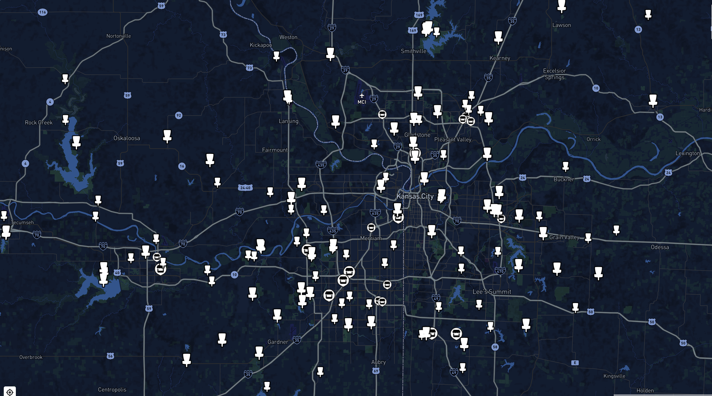
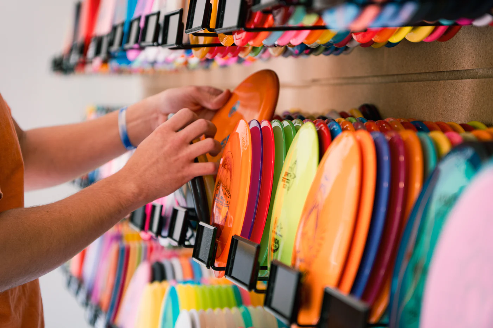

BACK NINE KC
Welcome to BACK NINE KC
Experience the wide variety of courses and the strong local community that KC has to offer.

Our Mission
At BACK NINE KC, we aim to highlight the thriving disc golf scene in Kansas City. Whether you're a beginner or a seasoned player, you are sure to find a course that suits your needs!

Visit a Local Store
Support the local disc golf community by visiting one of the many disc golf stores in the Kansas City area. These stores offer a wide selection of discs, bags, and accessories, as well as expert advice and a welcoming atmosphere for players of all skill levels.

Test Your Skills
Compete in local tournaments and showcase your abilities with tournaments ranging from beginner to advanced levels.
Join a League
Connect with the local disc golf community by joining a league. Whether you're looking for competitive play or just want to have fun, there's a league for you. Check out our league schedule to find one that fits your interests and skill level.
- Monday: Monday Olathe Weeklies at Praire Center Park | Olathe, KS
- Tuesday: Heritage League at Heritage Park | Olathe, KS
- Wednesday: High Roller Singles League at Rosedale Park | Kansas City, KS
- Thursday: Mixed Doubles League at Shawnee Mission Park | Shawnee, KS
- Friday: Youth League at Water Works Park